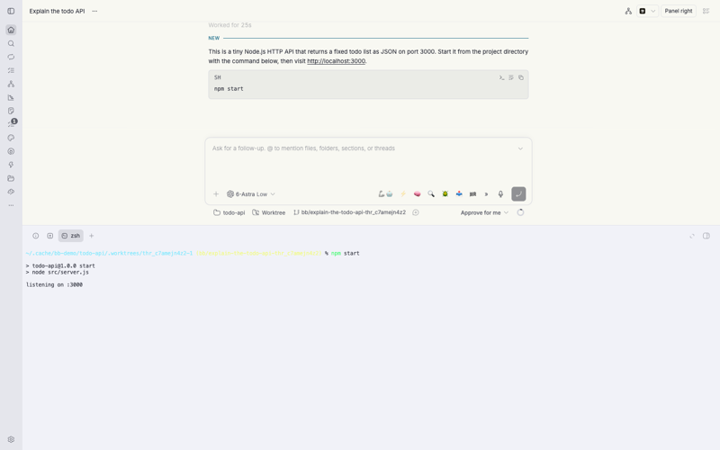
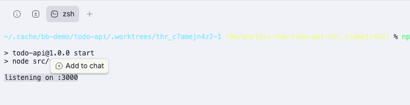
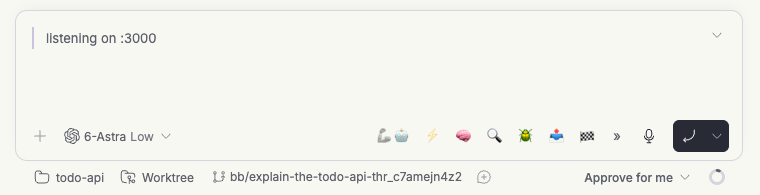

Bottom Panel
Themes and appearancePuts bb's App panel, with its terminal, browser tabs and previews, below the chat like an IDE, with a draggable divider. Select text in the terminal and press Cmd+L (Ctrl+L on Windows and Linux) to drop it into the chat composer without sending it.
bb plugin install bottom-panel@bb-community





